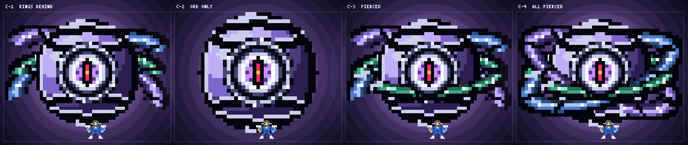

真マオウレクス「軌道神核」― 修正版
ご指摘の3点（大きさ1.1倍／眼の作り直し／質感）を反映しました。 残った論点は「環をどこに置くか」の1点だけです。下の4パターンから選んでください。
1. 眼を作り直した

球（神核）と眼の拡大。ゲーム中はこれが常時ゆっくり動きます（瞬き・瞳の揺れ）。
- 縦に裂けた瞳孔 ― バツ印をやめ、悪魔の眼のスリット瞳に。奥に赤い炎が灯り、中心に金の火花
- 白熱の強膜＋紫の虹彩 ― 外側ほど暗い同心＋放射の筋で、奥行きのある眼球に
- 装甲の眼窩 ― 眼は金属の窓枠（リベット付き）の奥に嵌まっている＝機械と生体の同居
2. 質感を作り直した
- 本体を「環だけ」から装甲に覆われた球（神核）に変更 ― 環だけでは大きな面が取れず、どれだけ描き込んでも薄い帯にしかならなかったため
- 球の明暗は本物の球面シェーディング（法線×光源）から計算 ― 左上から光が当たり、縁が回り込む
- マオウレクス本体と同じ「大きな面＋黒い溝＋面の中の明度差」 ― 経線・緯線の溝で装甲板に分割し、溝の片側に光のエッジ
- 環も断面に階調を持つ厚みのある装甲の帯 ― パネルラインで板に分割し、板ごとに聖句を刻む
3. 環の見せ方 ― 4パターンから選んでください

すべて実プレイの等倍。足元が主人公です。大きさは指定どおり約1.1倍（470×310px。修正前は416×312px）。
- C-1 環はすべて奥 ― 球の面が一切隠れないので質感は最大。ただし左右へ張り出すぶん、やや「翼」に見える瞬間がある
- C-2 環なし（球と眼だけ） ― いちばん大きく、いちばん質感が出る。環は攻撃の時だけ出現する演出にする案（整列レーザーの瞬間に3つの環が実体化して揃う）
- C-3 ベルト1本が手前を通る ― 水平の環だけが球の下側を横切る。前後関係がはっきりして立体感は最強。そのぶん球の下側が隠れる
- C-4 3枚とも球を貫く ― 「取り巻かれている」感じは最強。そのぶん帯が球の面を3本横切って質感を削る
ゲーム中は環が常時ゆっくり公転する（帯のハイライトが流れる）ので、静止画より1枚ずつの環は読み取りやすくなります。 私のおすすめは C-3（質感と立体感の両立）。C-2 は「攻撃で環が現れる」演出込みなら最も新しい見せ方になります。